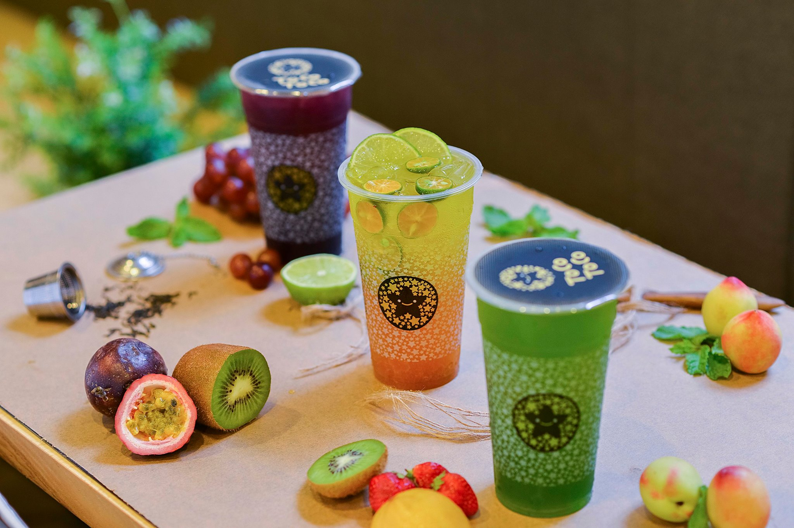
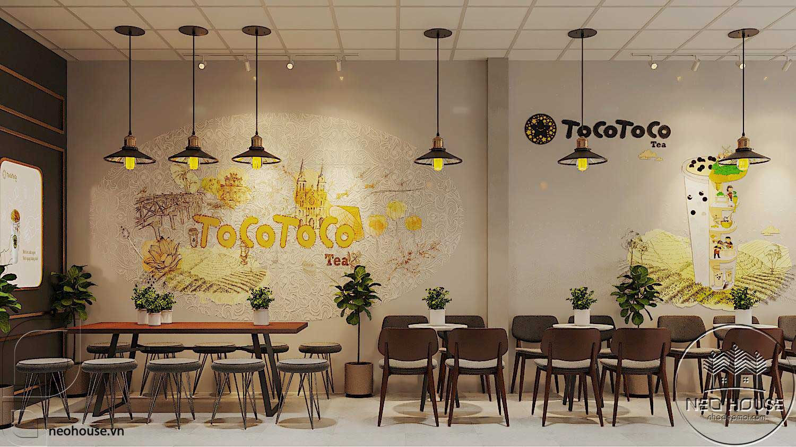
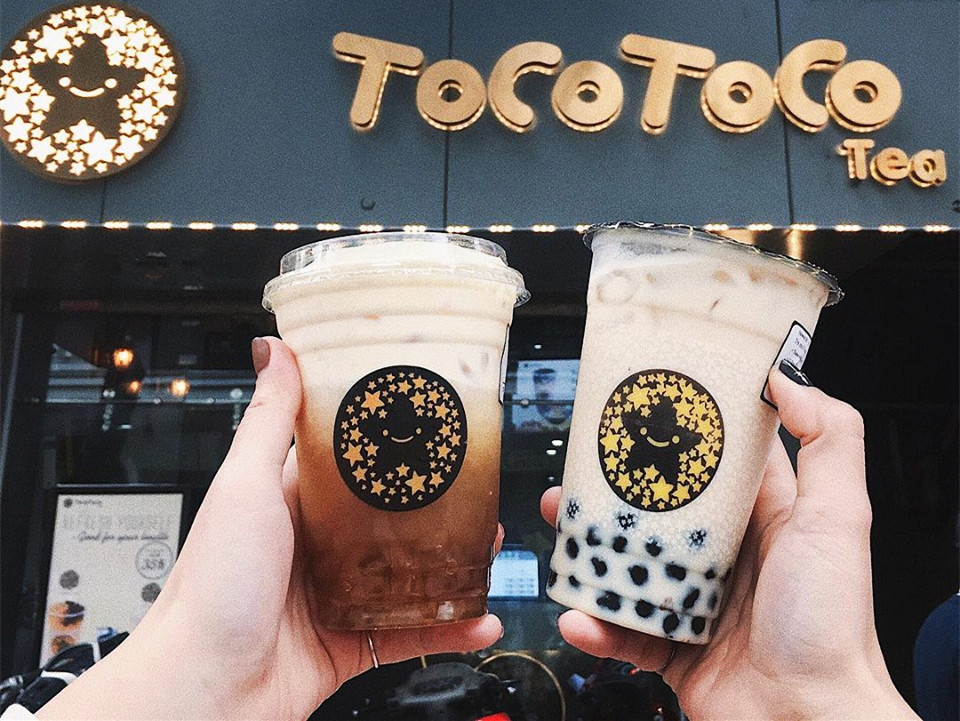
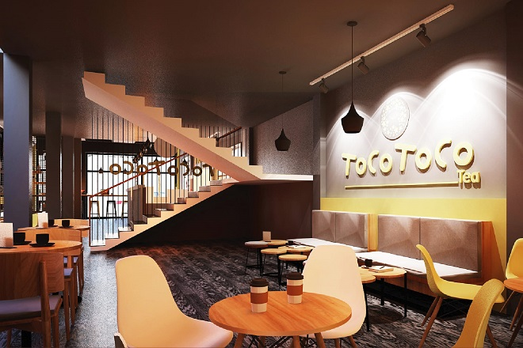

Giới thiệu

Luôn tâm huyết với việc khai thác nguồn nông sản Việt Nam để tạo ra những ly thức uống tươi ngon, an toàn và giàu giá trị dinh dưỡng, ToCoToCo mở cửa hàng đầu tiên vào năm 2013, mang trong mình lòng đam mê và khát vọng xây dựng một thương hiệu trà sữa thuần Việt, mang đậm hương vị quê hương.ToCoToCo tin rằng thưởng thức một ly trà sữa được pha chế từ trà Mộc Châu, trân châu từ sắn dây Nghệ An hay mứt dâu tằm từ Đà Lạt sẽ là những trải nghiệm hoàn toàn khác biệt và tuyệt vời nhất cho những khách hàng của mình.
Cũng chính từ sự khác biệt đó, thương hiệu ToCoToCo đã có những bước phát triển thần tốc và dần chiếm lĩnh thị trường trà sữa với hơn 200 cửa hàng trải dài trên toàn quốc. Cột mốc năm 2018 đánh dấu ước mơ vươn xa biển lớn của thương hiệu khi ToCoToCo chính thức đặt chân lên nước Mỹ và tiếp nối thành công tại Úc, Nhật Bản, Hàn Quốc, Singapore,…
Hành trình đầy đam mê và tâm huyết này sẽ tiếp tục nhân rộng để lan tỏa những ly trà thuần khiết nông sản Việt đến mọi miền trên Việt Nam và thế giới.

Cũng chính từ sự khác biệt đó, thương hiệu ToCoToCo đã có những bước phát triển thần tốc và dần chiếm lĩnh thị trường trà sữa với hơn 200 cửa hàng trải dài trên toàn quốc. Cột mốc năm 2018 đánh dấu ước mơ vươn xa biển lớn của thương hiệu khi ToCoToCo chính thức đặt chân lên nước Mỹ và tiếp nối thành công tại Úc, Nhật Bản, Hàn Quốc, Singapore,…
Hành trình đầy đam mê và tâm huyết này sẽ tiếp tục nhân rộng để lan tỏa những ly trà thuần khiết nông sản Việt đến mọi miền trên Việt Nam và thế giới.

